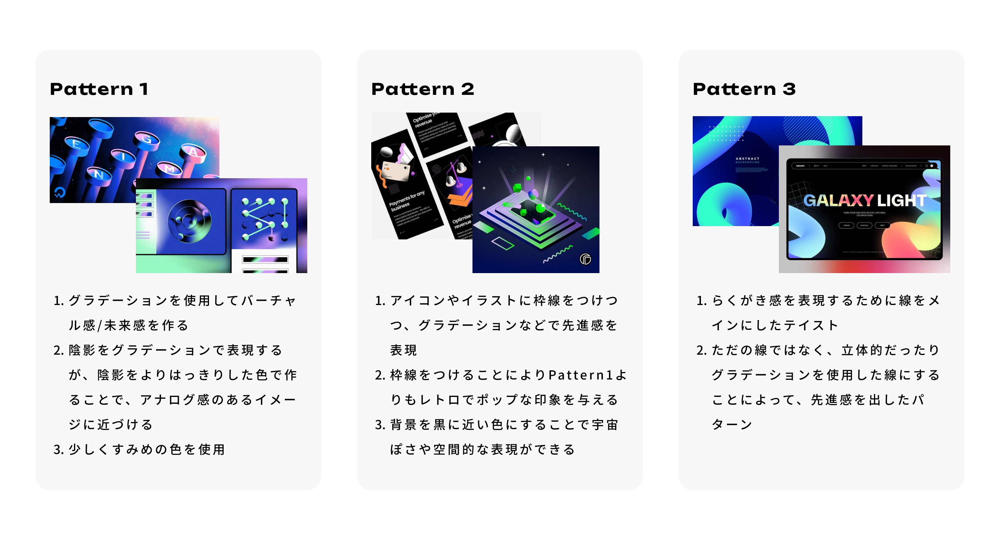
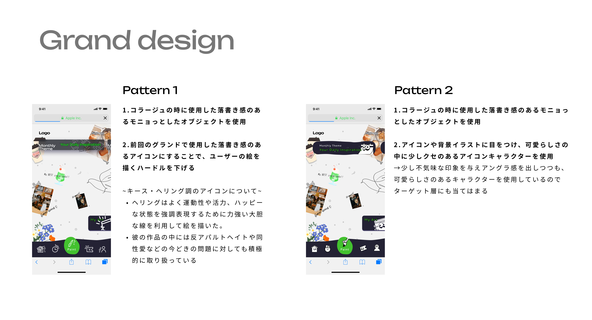

Problem
Solution
&
Q.01
戦略を機能要件に落とし込むまでに行ったことは？

Solution 01
客観的に意思決定ができる判断軸を与える
事業戦略についてはヒアリングをしたところ、既に8割ほど構想は決まっていたものの、決め手に欠けているような印象を受けたので、それぞれの段階で言語化して認識を合わせつつ、選択肢を様々な角度で評価でき客観的に優先順位をつけることで、スピード感を持って進められるようにしました。
サービスを導入する先のターゲットの優先順位を決める段階
Solution 02
ユーザーの理想的な顧客体験をシナリオ化
戦略部分が決まったのち、機能要件の定義を行うためにユーザーのあるべき姿を描いたTo-Beカスタマージャーニーマップ(理想シナリオ)を書いていきました。
それぞれの段階での理想の行動を書き出し、行動を叶えるための機能を洗い出していく
理想シナリオについては、クライアントが書き方に困らないように、こちら側で一旦このサービスに対してのシナリオのたたきを作成し、イメージと異なる部分を修正してもらうような進め方を採用しました。
Solution 03
早い段階でのLo-fi着手
画面のイメージを沸かせて最終系の機能イメージを沸かせてあげるためシナリオでメインの機能を大まかに決めた後に、同時並行で低粒度のワイヤーフレーム(Lo-fi)の作成を行うようにしました。
早い段階で画面イメージを見せてあげることによって、最終的なアウトプットに大きな齟齬がないかを確認していきました。
大まかな画面のイメージを確認できたのちに、細かな機能要件の定義を行いました。
Solution 04
クライアント様の要望をヒアリング
今回のクライアント様はデザインにとてもこだわりがあったため、グランドデザインを決定する時間を長めに取りました。
ヒアリングシートで頭の中にある方向性を言語化
まずはどんなデザインを目指すべきなのか/どんなデザインにしていきたいのか、を確認するためにヒアリングをしながら言語化を行いました。
コンセプトやブランドイメージよりどんな方向性にしたいと考えているのかを記入してもらう

デザインのカテゴリーをざっくりと分類したものを見せ、どんな方向性をイメージしているのかを確認
ヒアリングシート状で今回ポイントとなったのは「ストリートアートがデジタルに移行した空間を表現する」ことでした。
このキーワードのみだとクライアント様の頭の中で考えているイメージが掴みきれなかったため、イメージしているデザインをpinterestのボードで共有してもらうことにしました。
Solution 05
イメージを共有してもらいイメージをさらに言語化、似合いそうなデザインの要素を具体化していく
そしてpinterest上で「ストリートアートとはどんなイメージなのか」と、「ストリートアートがデジタルに以降した時にどんなイメージを持っているのか」の2つの軸から参考を共有していただきました。
すると、前者の軸については「スプレーなどによるグラフィティアート」のイメージを、後者の軸については「先進的なイメージのグラデーション」や、「レトロポップ」な印象のイメージをいただきました。
ここで、クライアント様の頭の中でアイデアが散漫になっている印象を受けたため、まずは後者の軸でいただいた方向性の整理を行っていくことにしました。
そしていただいたイメージをそれぞれ簡単に言語化し、それらの特徴を織り交ぜた折衷案を提示した結果、キーワードにもあった「空間」も表現しつつ、先進性とレトロさのバランスが良いパターン2に決定しました。

言語化したものを織り交ぜた方向性のパターン出し
Solution 06
ストリートアートっぽさの分量を決定していく
土台となるデザインの方向性は決まったので、後はストリートアートの要素をどんな風に/どのくらいの量で取り入れるかを決定する必要がありました。ただ今回のターゲットとなるのは20代の女性がメインであったため、乱雑さのあるストリートアートをどのように取り入れていくかが大きな課題でもありました。
ここは装飾的なグラフィックの部分になるため、実際にデザインのパターンを2つ作成しイメージのすり合わせを行いました。

実際に提出したパターン1とパターン2のデザイン
1パターン目はグラフィティアートでも代表的なキース・ヘリングのアートをモチーフにしたポップなアイコンや装飾を散りばめたデザイン。
2パターン目は少し不気味な目をアイコンにつけて、「気味悪さ」と「かわいさ」を掛け合わせたパターンを作成させていただきました。
その結果2パターン目のデザインに決まったため、この時点でグランドデザインを確定とさせていただき派生画面の作成を進めました。
落書き間のあるデザインを取り入れることによって、みんなが躊躇うことなく絵を描くことができるような空間を目指しました。
Solution 07
ロゴについてのヒアリング
UIデザインと同様、まずはヒアリングシートにて、方向性のすり合わせを行っていきました。ただUIを作成する時点でサービスへの想いやコンセプトなどは確認を取れていたため、その前提をもとにロゴの方向性(UIの要素を取り入れたいかやイメージさせたい雰囲気など)のすり合わせを行いました。
Solution 08
ロゴのラフ案作成
ロゴデザインについては今までのアウトプットでデザイン面での信頼を得ることができていたため、前提部分の方向性をすり合わたのち、提出したラフ案(3パターン)の中から選んでいただくような進め方を取りました。(アウトプットとしてはロゴタイポとロゴマークの両方を出しておりますが、サービス名が記載されているためロゴタイポのデザインは割愛してます。)
それぞれのキーワード/方向性からラフ案を作成した中で、パターン3が選ばれたため、パターン3のブラッシュアップを行っていきました。
一筆書きで3方間でつながりながら、共に創り出していく様子を表現しました。